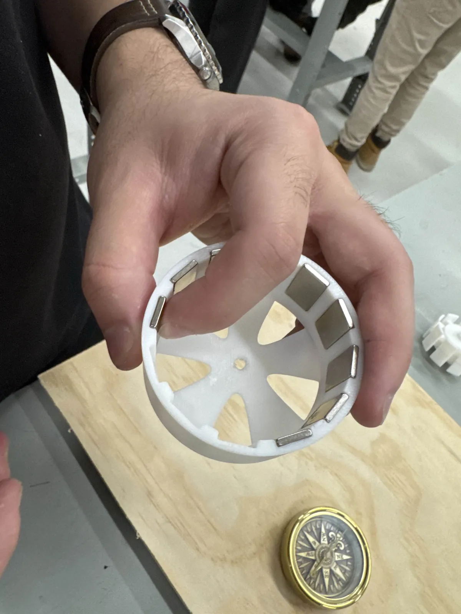

Design
We used a 9-slot, 12-pole layout with N52 magnets on the rotor and 0.42 mm copper wire on the stator. I worked on the winding layout, conductor and material selection, and magnet sizing, then wound and assembled the three-phase stator.


Testing
The first tests showed uneven rotation and a continuity problem. Continuity checks traced the electrical fault to enamel left on the winding ends, and cleaning the ends fixed the connection. We also had to work through a rotor-alignment problem. After that, the prototype successfully ran at high RPM during testing.
The report gives 3,000–4,000 RPM as a design estimate. We didn’t measure the speed with an instrument.